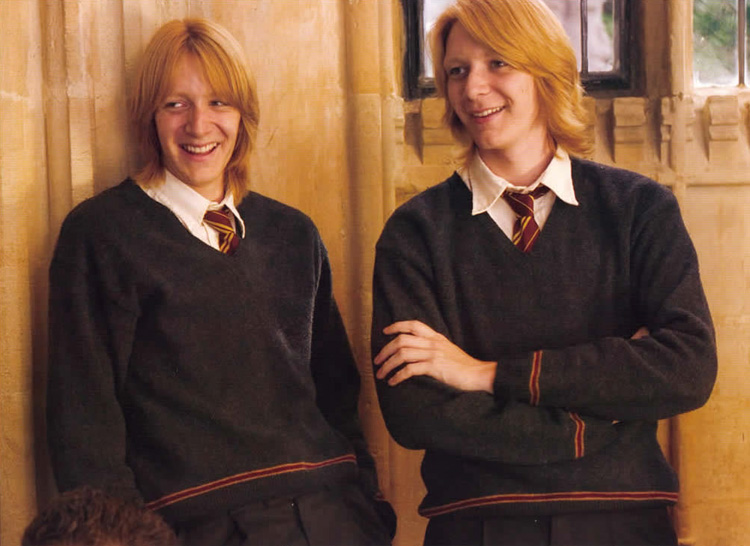
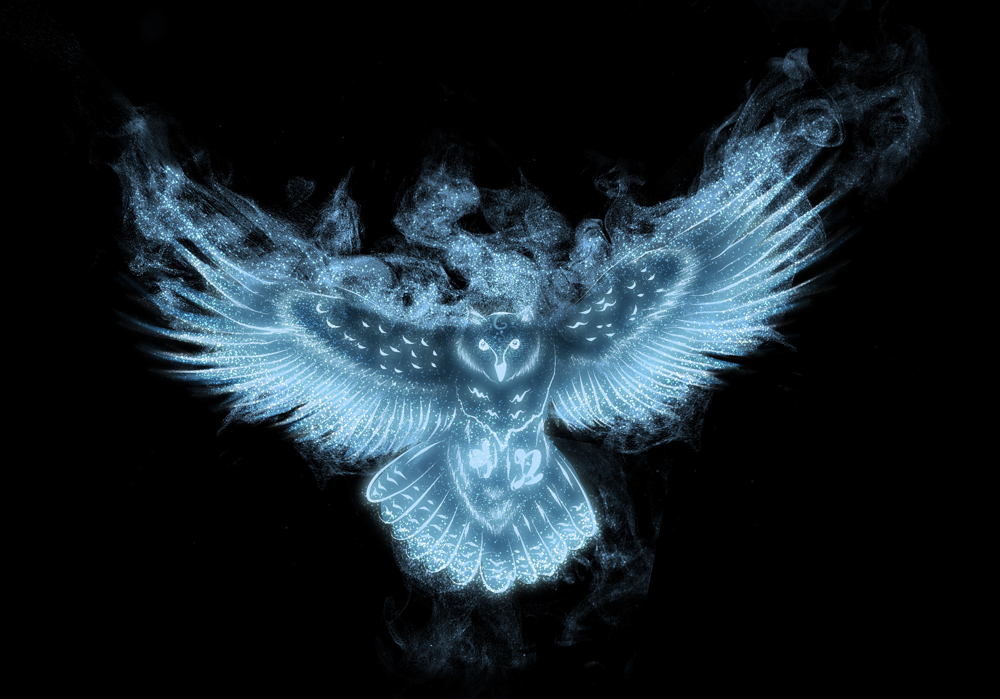
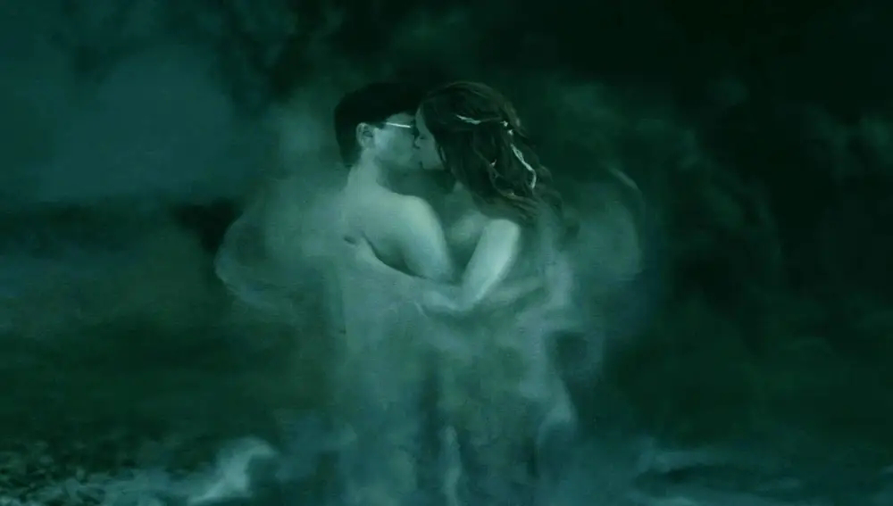

CURIOSIDADES SOBRE HARRY POTTER
Alguns dos atores tem grau de parentesco na vida real
algo que muitos não sabem, é que vários atores são parentes na vida real, um exemplo é que Brendan Gleeson (Olho tonto moody) e Domhnall Gleeson (gui weasley) são pai e filho na vida real
Eles trabalharam em muitos filmes e pecas teatrais juntos

Gêmeos weasley
Alem da sua personalidade discontraída dentro dos filmes,os gêmeos tem isso em comum com seus personagens na vida real, eles foram para a audição so para faltar aula

Site de harry potter
Existe um site oficial do universo de harry potter, e nele você pode descobrir tudo sobre o mundo bruxo você pode descobrir seu patrono, sua casa, ate mesmo sua varinha

CONSTRANGEDOR
Nas gravações do filme, o ator RUPERT GRINT teve que ser retirado do set por rir demais na cena em que HARRY e HERMIONE se beijam na destruição da horcrux
